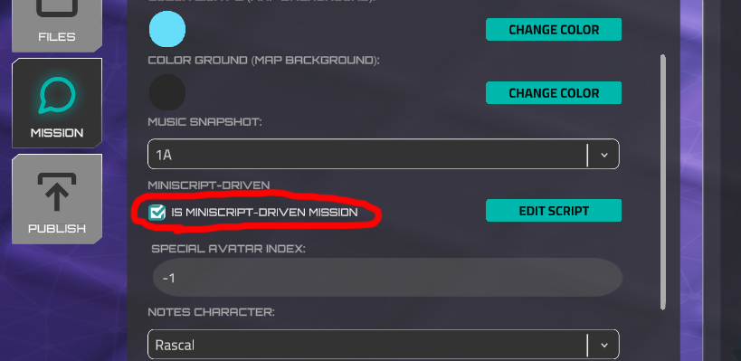
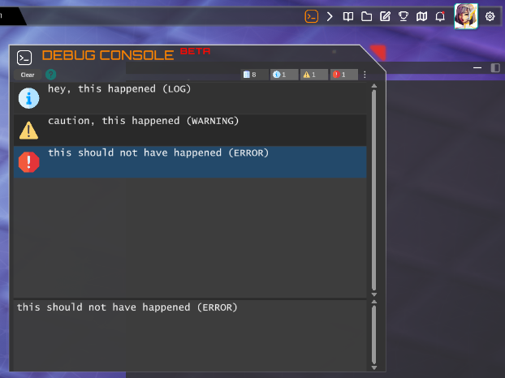
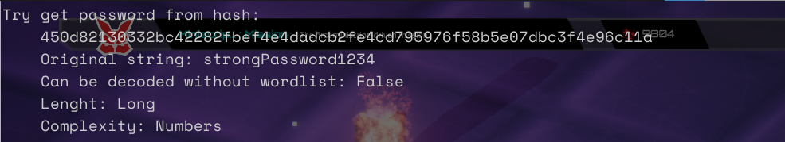
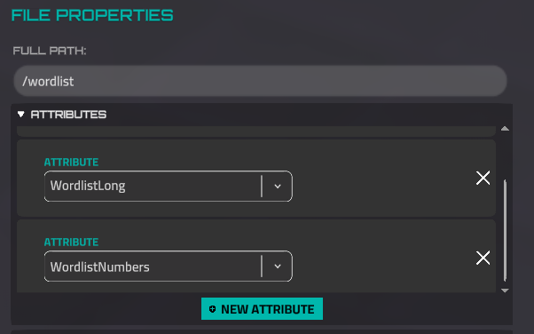
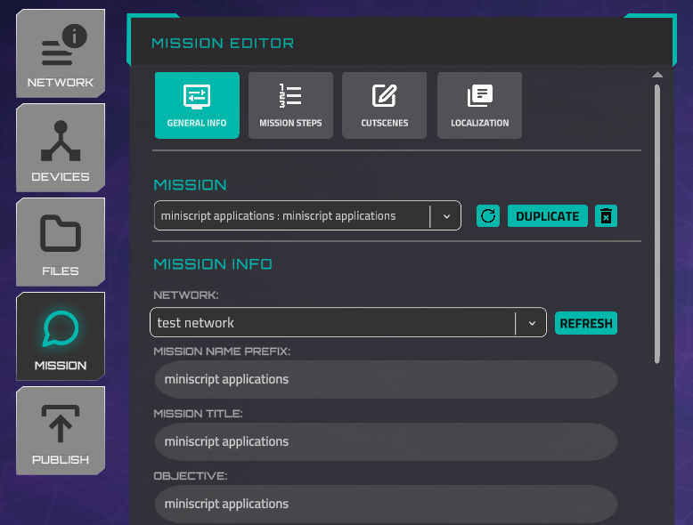
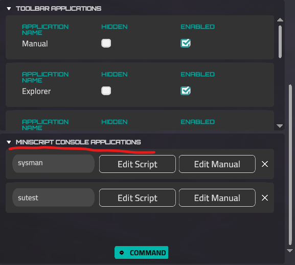
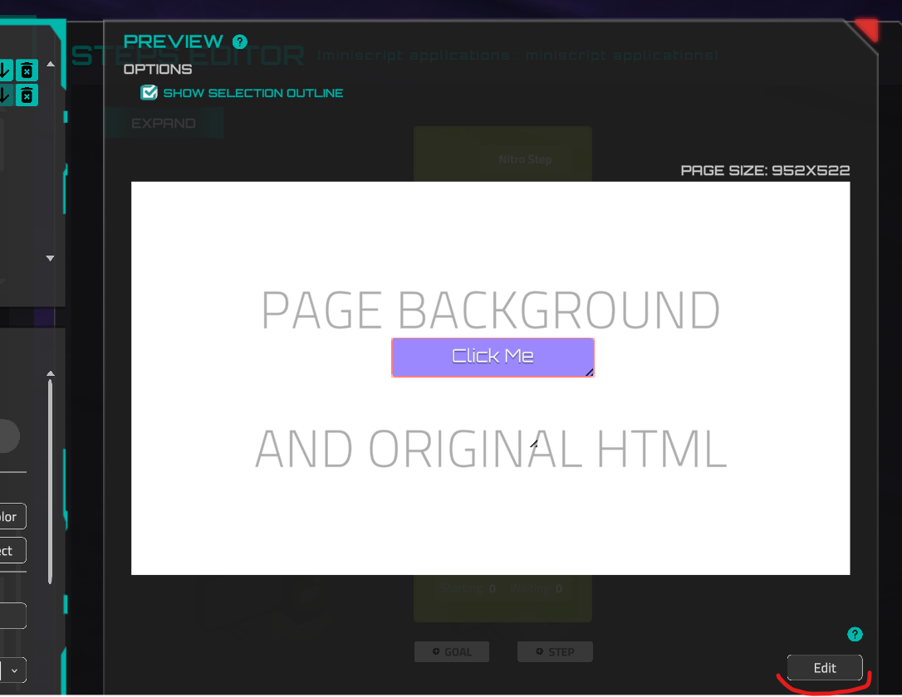
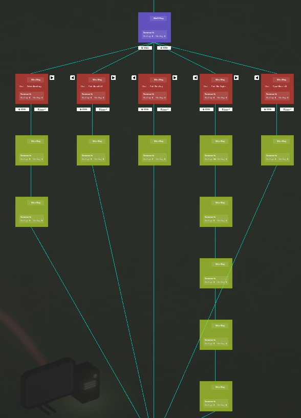

Story Creation with Miniscript¶
Overview¶
Forge missions and labs are (usually) made with the Miniscript scripting language, a mission's lifecycle is tied to its mission script, which executes when the missions starts. Once the script finishes executing - either normally or due to an error - the mission ends.
Exception
Missions were previously created using a step-based editor that is now deprecated. Some missions still use this format and are in the process of being rewritten.
The Miniscript approach uses the in-built miniscript scripting system. That provides significant flexibility, although it does require basic programming knowledge. In practice, the only essential concepts are the "if" and "while" statements. More complex logic can be avoided by relying on the the built-in CommandWaiting and Sequence objects.
An alternative approach is to use the raw _command_queue interface, a list populated by the engine with the raw commands entered by the player. With this pipeline, the script effectively becomes a listener for story events.
Raw story events¶
If _command_queue is declared, the engine will push raw story events into it. _command_queue must be declared as a list, and the script must be alive for events to be received.
This implies the need of pulling command events from _command_queue, probably inside a loop.
Raw story events with _command_queue example
mission = {}
mission.running = true
// calling `mission.running = false` anywhere ends the mission
wait(nitroApp("Rascal", "Please type 'echo complete' to complete the mission"))
on_story_event = function(command, device, arguments)
// check for mission progress and steps here
if command == "echo" and arguments.len > 0 then
first_arg = arguments[0]
if first_arg == "complete" then
setGoalAsCompleted("Complete the mission")
mission.running = false
wait(nitroApp("Rascal", "Congratulations, you have completed the mission"))
return
end if
end if
wait(nitroApp("Rascal", "Wrong... you should have written ""echo complete"", not " + command + " " + arguments))
end function
_command_queue = []
while mission.running
if _command_queue.len > 0 then
_next_event = _command_queue.pull
on_story_event(_next_event.command, _next_event.device, _next_event.arguments)
end if
yield
end while
println "mission complete!"
print_default_prompt
This approach provides the highest level of flexibility, but it also requires the developer to manually implement all mission logic, including step definitions, completion criteria, and command matching.
It is recommended to start by copying one of the graph mission examples
Sequence and CommandWaiting¶
Sequences and CommandWaiting rely on hardcoded MiniScript code that is automatically prepended to all mission scripts and executed before the mission script itself runs. Modifying this code requires changes to the Unity engine project. A copy of the current implementation is available below:
Download StoryMiniscriptInclude.ms
Using prebuilt CommandWaiting and Sequence example
To allow writing a mission with any of the Miniscript approaches, go to the "General Info" tab in the Forge, scroll down, and make sure the "is Miniscript-driven mission" toggle is turned on.

The "Edit Script" button opens the in-built text editor. Here you can write a small script; however, it's better to use an external text editor and use the in-game editor only for copy/pasting the script. The developer's recommendation is VsCode or a simpler Notepad++ with Lua syntax highlighting (Language > L > Lua).
Since the mission lifecycle is tied to the script, missions are generally structured around yielding script execution by using statements like yield or wait which pause execution temporarily. This is usually done in a while loop that continuously checks whether a player has performed a required action or set of actions.
When using a loop for checking performed commands, the loop body must contain a yielding function (yield, wait or similar) to prevent the game from freezing. When using the wait function, it's recommended to use a 0.1 delay value (100 milliseconds).
You can always explore examples. Let's start with a very simple mission that requires only a couple of actions from a player and has only one goal.
Functions¶
Most of these functions are Bindings, code that binds the unity implementation to miniscript, calling a binding directly calls some C# code written in the engine, bindings and other functions are called Intrinsics internally.
Commands and Apps¶
unlockApp
Some terminal commands are locked by default or can be locked by a mission creator using the 'lockApp' function. This function is used to prevent undesired actions, such as invoking the 'rm' command. The 'unlockApp' function unlocks these commands.
Arguments
| commandName | string, terminal command name |
|---|---|
Example
lockApp
Lock the terminal command. When the user tries to use this command, they receive a 'Command Locked' message in the terminal.
Arguments
| commandName | string, terminal command name |
|---|---|
Example
lockAllApps
Locks all terminal commands, including custom miniscript commands and custom miniscript window opener commands.
They can later be unlocked individually
unlockAllApps
Unlocks all terminal commands, including custom miniscript commands and custom miniscript window opener commands.
They can later be locked individually
unlockToolbarApp
Unlock a window application that can be opened by a button in the Toolbar. You can set which applications are accessible by default in the Mission General Info tab in the Forge.
Arguments
| appName | string, the name of the app. Options: OpenManual OpenExplorer OpenNotes OpenSkillTree OpenWebBrowser DataExplorer | | --- | --- | | showNotification | optional, boolean, 1 to show the notification, 0 to not show. The default value is 1. If the notification is shown, the game waits until a player opens this window, but the miniscript flow moves forward. |
Example
lockToolbarAppTemporarily
Lock a toolbar application for one device or for the entire network. This command gives the ability to display a Nitro message when a user tries to open a locked application.
Arguments
| appName | string, the name of the app. Possible values: File Editor, Explorer, Manual, Notes, Skill Tree or custom windowed application name. |
|---|---|
| device | string, optional, the name of the device where the application won't be able to open. The default value is '_', which means the application will be locked for the entire mission. |
| nitroCharacter | string, optional, a character name who will send a message if the user tries to open a locked app. Do not set it if you do not need any feedback. Here is the list of characters. |
| nitroMessage | encoded string, optional, this message will be shown in the Nitro if the user tries to open a locked app. You can use any URL encoding tool, for example this one - https://www.urlencoder.org |
Example
//The file editor will remain locked during the mission until it is unlocked.
lockToolbarAppTemporarily("file editor", "_", "Rascal", "You%20can%27t%20use%20this%20app%20now%2C%20use%20terminal%20instead.")
//And this is how we can simulate the absence of a file explorer installed on a specific device.
lockToolbarAppTemporarily("explorer", "Home System", "Rascal", "File%20Explorer%20is%20not%20installed%20on%20this%20workstation.")
unlockToolbarAppTemporarily
Unlock a previously locked toolbar application using the 'lockToolbarAppTemporarily' function. Please note that if the app was locked for several devices, this function will unlock the app for the entire network.
Arguments
| appName | string, the name of the app. Possible values: File Editor, Explorer, Manual, Notes, Skill Tree or custom windowed application name. |
|---|---|
Example
runSimulatedApplication
Add a running process to the operating system. This process can be displayed by the 'ps', ‘netstat’ commands or stopped by the 'kill' command.
Arguments
| processName | string, a process name |
|---|---|
| device_name | optional, string, device name to run the process. If not set, the process will run on all devices in the network. |
| These arguments work only if the device name is specified. | |
| is_user_killable | optional, number, can be killed by a player using the kill command (1 - yes, default value; 0 - cannot be killed). This works only if the device name is set. |
| protocol | optional, string, the protocol name to be shown in the netstat command output. The default is TCP. |
| port | optional, number, the port number shown in the netstat output. The default value is -1, which represents a random port. The port number must be within the range of 0 to 65535. |
| listen_ip | optional, number, the IP address to show in the netstat output. The default is 0.0.0.0:*. If a device name is set, the IP address of this device will be used. |
Example
setCommandActiveInManual
Activate a command entry in the Manual application. This makes the specified command visible and accessible in the in-game manual.
Arguments
| appName | string, the terminal command name to activate in the manual |
|---|---|
Example
Debugging¶
The mission runner has an in-game Debug Console, by default it's only active in Preview mission mode (using forge) but that can be overridden to true or false using a miniscript binding: force_debug_console_enabled

force_debug_console_enabled
Enables or disables the in-game debug console, by default it's turned on for preview missions and off for published and base missions
Examples
Logging into the console:
dbgwarn
Logs a "warning" message into the in-game debug console
dbgerror
Logs an "error" message into the in-game debug console
Nitro¶
nitroApp
Show the message in the Nitro messenger. This function isn't asynchronous, so the next function will be invoked immediately after this. If you need to wait until the message is written, use the wait function.
Text provided in the message argument can have RichText tags and text substitution, more on that:
Service Commands & Feedbacks
Returns the delay value (set in the delay parameter or calculated automatically). This value is often used together with the wait() and nitroCaption() functions (see examples).
Arguments
| character | string, see the possible values below |
|---|---|
| message | string, URL-encoded message. You can use any URL encoding tool, for example this one - https://www.urlencoder.org |
| time | string, optional, the time will be displayed. The default value is '_', which means the current player's time. |
| delay | float, optional. Time in seconds to simulate the 'writing' of the message. Default value is -1, which means the time will be calculated automatically. |
Available characters
Rascal
Gungnir
Eos
Sorceress
Dekkar
DojoCharacter
Lugh
Spyder
Saga
Fez
DrParks
Orel
Kona
Acan
Kunwu
BusinessAbaddon
BusinessAcan
BusinessCerberus
BusinessDekkar
BusinessEos
BusinessGungnir
BusinessKunwu
BusinessRASCAL
BusinessSorceress
BusinessSpyder
PrivateSato
StaffSergeantVazquez
SergeantMajorRiya
MasterSergeantMoore
SergeantAbernathy
SpecialistSoroka
CorporalCarter
SpecialistDelaCruz
Vikram
StaffSergeantCollins
ColonelWilliams
AirmanDavisJr
FirstLieutenantThakral
Example
nitroCaption
Show or hide the "Next Message" caption in the Nitro Messenger. This function is not asynchronous, so it doesn't wait until the player presses the "next message" button.
Arguments
| type | int, type of the action. 0 - hide the current button, 1 - show the "Next Message" button. |
|---|---|
Example
Devices¶
autoConnect
Connects to a device, by default uses the first found user credentials there If the device has no users, it will not work, logs an error
Arguments
| Name | Description |
|---|---|
| device_name | string, you can see this value in the Device Properties tab (Forge) |
Optional Arguments
| Name | Description |
|---|---|
| user_name | String. Specify which user name to connect with. If omitted, the first found user will be used. |
| should_print_connect_text | Boolean (true/false) or numeric (0/1). |
Examples:
autoConnect("test_mission_network_workstation_1")
autoConnect("test_mission_network_workstation_1", "user1")
autoConnect("test_mission_network_workstation_1", "user1", false) // does not print the welcome text
autoConnect("test_mission_network_workstation_1", "user1", true) // does print the welcome text
get_all_devices
Returns a list of all devices in the current network, in the following format:
Example:
get_current_device
Returns the name (as set in the Forge Network Device Properties) of the currently connected device. For the default home device, it will always be "Home System"
get_current_username
Returns the username of the currently logged-in user.
get_device_users
Returns a list of maps containing information about the users on the specified device.
| device_name | string |
|---|---|
Map Format
| username | |
|---|---|
| password |
Example:
Note that an array (list) is returned. To navigate through the array, you should use special functions.
set_device_users
Sets the user list for the specified device. The result from get_device_users can also be used.
Arguments
| device_name | string |
|---|---|
| users | list, elements must be user maps |
Example
users = get_device_users("network_3_Workstation_2")
users.push({ "username": "new_user", "password": "new_psw" })
set_device_users("network_3_Workstation_2", users)
In this example, a new user with the username "new_user" and password "new_psw" will be added.
Note that an array (list) is used in the argument. To navigate through the array, you should use special functions.
get_device_sudo_password
Returns the superuser (root) password of the specified device. An empty string indicates that the superuser is not configured for this device.
Arguments
| device_name | string |
|---|---|
set_device_sudo_password
Sets the superuser (root) password for the specified device.
Arguments
| device_name | string |
|---|---|
| sudo_password | string, new password. Set an empty string if you want the superuser to be unavailable for this device. |
get_device_os
Returns the name of the device's operating system. Players can see the device's OS name in the output of the nmap command.
Arguments
| device_name | string |
|---|---|
set_device_os
Sets the device's operating system. Please note that Windows devices have different behavior. Different command names will be used, some commands may not be available, and the terminal view will differ.
| device_name | string |
|---|---|
| os_name | string, Windows value is a special setting that alters the device's behavior as described above. Other values will be recognized as Linux common distributive. |
get_device_os_version
Returns the device's OS version. This value may be visible to players in the output of the nmap command.
| device_name | string |
|---|---|
set_device_os_version
Sets the device's OS version. This value may be visible to players in the output of the nmap command.
| device_name | string |
|---|---|
| os_version | string |
get_device_port_list
Returns a list of the maps that are configured on the device.
Map Format
| service | string, the name of the port |
|---|---|
| number | number, the number of the port |
| version | string, optional |
Arguments
| device_name | string |
|---|---|
Note that an array (list) is returned. To navigate through the array, you should use special functions.
set_device_port_list
Sets the device ports from the list of maps. See the map description here.
Arguments
| device_name | string |
|---|---|
| ports | list |
Example
portList = get_device_port_list("network_3_Workstation_2")
portList.push({ "service": "ftp", "number": 21, "version": "1.0"})
set_device_port_list("network_3_Workstation_2", portList)
In this example, the FTP port will be added.
Note that an array (list) is used in the argument. To navigate through the array, you should use special functions.
get_device_computer_name
Returns the device's computer name. Players can see this name in the output of the nmap command.
Arguments
| device_name | string |
|---|---|
set_device_computer_name
Sets the device's computer name. Players can see this name in the output of the nmap command.
Arguments
| device_name | string |
|---|---|
| os_name | string |
get_device_host_name
Returns the device's host name. This name is used as a substitution for the IP address.
Arguments
| device_name | string |
|---|---|
set_device_host_name
Sets the device's host name. This name is used as a substitution for the IP address.
Arguments
| device_name | string |
|---|---|
| host_name | string |
set_device_discovered
Discover the device with animation if it is hidden.
| device_name | string, unique device name, can be copied from Forge Device Properties |
|---|---|
ping_highlight_device
Play a visual ping/highlight effect on a device in the network map. Useful for drawing the player's attention to a specific device.
Arguments
| device_name | string, unique device name as set in Forge Device Properties |
|---|---|
Example
device_name_to_ip_address
Returns the IP address by the device name (the device name is set in the Forge Network Editor). If there is no device with such a name, an error will be raised, and the script will stop.
ip_address_to_device_name
Returns the device name by IP address. IP addresses are generated randomly, but device names are stable and set in Forge. Returns null if there is no device with the given IP.
wait_for_device_click
Returns 0 if the user doesn't click on the specified device. Returns 1 if the user clicks on the device and sets the signal to 0 again (this means that the method will return 0 on the next frame, until the user clicks on the device again).
Please note, the default action (copying the device name to the buffer) won't be executed if this function is invoked and until it returns a 1 signal.
Example:
add_network_interface
Add the network interface to the specified device. This interface will be visible in the ifconfig command output.
| device_name | string |
|---|---|
| interface_name | string, the name of the new interface. If an interface with such a name already exists, it will not be added. |
| is_running | number, 1 - running, 0 - not running |
| running_text | encoded string, the ifconfig command output, if the interface is running. URL-encoded value is recommended here. See also the list of keywords below. |
| not_running_text | encoded string, the ifconfig command output, if the interface is not running. URL-encoded value is recommended here. See also the list of keywords below. |
Keywords
| $ipAddress$ | device IP address |
|---|---|
| $subnet$ | subnet mask |
| $broadcast$ | calculated broadcast address |
| $baseIp$ | parent device base IP address |
Example
add_network_interface(
"infected_workstation",
"en0",
1,
"flags%3D8863%3CUP%2CBROADCAST%2CSMART%2CRUNNING%2CSIMPLEX%2C%0A%09MULTICAST%3E%0A%09inet%20%24ipAddress%24%20netmask%20%24subnet%24%20%0A%09broadcast%20%24broadcast%24",
"Link%20encap%3AEthernet%0A%09BROADCAST%20MULTICAST%20%20MTU%3A1500%20%20Metric%3A1")
remove_network_interface
Remove the existing interface from the specified device. This interface will not be visible in the ifconfig command output anymore.
| device_name | string |
|---|---|
| interface_name | string, the name of the existing interface |
Files¶
downloadFile
Create a file on any device.
Arguments
| encodedContent | string, URL-encoded file content. You can use any URL encoding tool, for example this one - https://www.urlencoder.org |
|---|---|
| device | string, device name |
| path | string, the full path of the file including the file name; it should start with the "/" symbol. |
| attributes | optional, an array with attributes of the file. The list of attributes is on this page. The default value is [ "Normal" ]. |
| readAccess | optional, a map with read access in the format { "userName": "true" }, where "true" indicates read access is allowed, and "false" indicates it is not allowed. |
| writeAccess | optional, a map with write access in the format { "userName": "true" }, where "true" indicates write access is allowed, and "false" indicates it is not allowed. |
Examples
//Create a file in the root directory of the default device, with read and write permissions for everyone
downloadFile("This%20file%20contains%0ANew%20line%20character%0AAnd%20%22special%20characters%22%20%26%20%5E%20%40%20%24", "Home System", "/rootFile.txt")
//Create a file in the Documents directory, but set it to read-only
downloadFile("This%20file%20contains%0ANew%20line%20character%0AAnd%20%22special%20characters%22%20%26%20%5E%20%40%20%24", "Home System", "/Documents/a", [ "Immutable" ])
//Create a file with read protection in the Downloads directory using {PlayerName} substitution
downloadFile("This%20file%20contains%0ANew%20line%20character%0AAnd%20%22special%20characters%22%20%26%20%5E%20%40%20%24", "Home System", "/Downloads/readProtected", [ "Normal" ], { "{PlayerName}" : "false" }, { "{PlayerName}" : "false" })
remove_file
Remove a file or directory on a specified device using the global path. If the file doesn't exist, it does nothing.
Example
open_file_from_file_system
Asynchronous function. Opens the file selection dialog (or the upload file window for the Web version) and reads the text from the selected file. If the file wasn't opened or can't be read (e.g., if it's binary or access restrictions), returns null. Otherwise, returns a string.
Example:
addFileAttribute
Append a new attribute to the file.
Arguments
| deviceName | string, a device name where the file is. |
|---|---|
| path | string, a full path to the file |
| attribute | string, attribute to append. The list of attributes. |
Example
clearFileAttributes
Clear all attributes of the file. This command is intended to revert changes made by 'addFileAttribute' or to clear its initial setup. For example, a hidden file will become visible after invoking the command.
Arguments
| deviceName | string, a device name where the file is. |
|---|---|
| path | string, a full path to the file |
Example
Mission¶
setGoalAsCompleted
Define and set the goal as completed. The place of invocation isn't important to define the goal. The script will be read, and all goals will be defined automatically at the start of the mission.
Arguments
| goalName | string |
|---|---|
Example
is_goal_completed
Returns 1 if the goal has already been completed.
| goalName | string, a value in the brackets of setGoalAsCompleted if a Miniscript mission is used. If story steps are used, there should be a step ID |
|---|---|
fail_mission
Immediately shows the restart mission popup. The mission won't be marked as completed. If the timer is launched, it will stop. Pay attention: this function doesn't break the code flow. If it is called somewhere in the middle of your script, you should ensure that the story functions below won't be invoked.
Example
dispatch_successful_command
This function is primarily used in custom applications and web browser scripts. It is generally not intended for use in the main mission script. However, there are rare scenarios where its usage in the main mission script might be justified.
The arguments of the function are validated using special objects. Refer to the examples for clarification.
Arguments
| command | string, the name of the command that was invoked |
|---|---|
| device | string, where the command was invoked |
| argument_0 … argument_7 | up to 8 arguments for the invoked command. Optional, but cannot be empty. |
Example
Mission Building¶
These are all implemented in miniscript, prepended to all mission scripts before they run Download StoryMiniscriptInclude.ms
Classes¶
CommandWaiting
Use this class to wait for a player to perform a single command.
Members
| command | input, string, a command name, that is excepted from a player |
|---|---|
| device | optional, input, string, an expected value of the device field in the feedback map. |
| arguments | optional, input, list with string arguments, that is returned by performed command. Pay attention: all arguments from the list should be executed; otherwise, the command is not fulfilled. |
| isPerformed() | function, returns 0 if a command isn’t performed, otherwise - returns 1. Pay attention, the CommandWaiting class invokes clearPendingFeedbacks function after fullfilling the conditions. |
Example
pendingCommand = new CommandWaiting
pendingCommand.command = "cat"
pendingCommand.device = "Home System" //optional
pendingCommand.arguments = [ "/Documents/toRead" ] //optional
while pendingCommand.isPerformed() == 0
wait(0.1)
end while
println("The step was passed")
pendingCommand = new CommandWaiting
pendingCommand.command = "cat"
pendingCommand.device = "Home System" //optional
pendingCommand.arguments = [ "/Documents/toRead" ] //optional
while pendingCommand.isPerformed() == 0
wait(0.1)
end while
println("The step was passed")
Also, there is a shorter version to initialize the CommandWaiting object.
Sequence
Sequence is an object designed to manage a sequence of steps, where only the latest step is required. This implies that a player can skip all preceding steps and execute only the latest one, after which the sequence will be marked as completed.
Each step can optionally include an action (function) that will be invoked if the step is performed.
The Sequence uses the SequenceStep object to store the CommandWaiting and action, which can be invoked.
Members (Sequence)
| steps | list of SequenceStep objects |
|---|---|
| currentStepIndex | number, the index of last performed step + 1 from the steps array. You don’t need to set this. |
| isPerformed() | function, returns 1 if the latest step in the steps array was performed, otherwise returns 0 |
Members (SequenceStep)
| commandWaiting | the CommandWaiting object. |
|---|---|
| action | optional, the reference to the function, that will be invoked after performing commandWaiting step. The default value is null. |
Example
sequenceStep1 = new SequenceStep
sequenceStep1.commandWaiting = getCommandWaiting("ls", "", [ "/" ])
sequenceStep1.action = function()
println("step 1 passed")
end function
sequenceStep2 = new SequenceStep
sequenceStep2.commandWaiting = getCommandWaiting("cd", "", [ "/Documents/" ])
sequenceStep2.action = function()
println("step 2 passed")
end function
sequenceStep3 = new SequenceStep
sequenceStep3.commandWaiting = getCommandWaiting("ls", "", [ "/Documents" ])
sequenceStep4 = new SequenceStep
sequenceStep4.commandWaiting = getCommandWaiting("cat", "", [ "/Documents/toRead" ])
sequenceStep4.action = function()
println("step 4 passed")
end function
sequence = new Sequence
sequence.steps = [ sequenceStep1, sequenceStep2, sequenceStep3, sequenceStep4 ]
while sequence.isPerformed() == 0
wait(0.1)
end while
println("sequence is passed")
In this example, there is only one required action from the user: reading the "toRead" file via the "cat" command. All previous steps can be skipped. Pay attention: there is no action after performing the "ls" in the "Documents" folder. It is not a mistake; it is an example that we can skip this if we don't need any action after a step.
Hint
This class is used to attempt to show hints. Hints are notifications with proposals to display some help related to the current mission stage.
The expected behavior is that if a player gets stuck on a stage, some time later they receive a notification with additional information about that stage. Additionally, hint content can differ based on the level of difficulty. You can use the if construction with the getHintsDifficultyLevel() function to set different text for the hint.
Members
| wasShown | 1 if the hint was already shown, otherwise - 0 |
|---|---|
| start(message, targetTime) | function, where message is a URL-Encoded string and targetTime is a time in seconds from the calling of start function to show the notification. |
| tryShowHint() | function, shows the notification once if the time has come |
| cancel() | function, stops the timer. After calling this function, invokation of tryShowHint() doesn’t make sense. |
Mission building functions¶
Mostly used internally
getPendingFeedbacks
It returns the list with unhandled actions of the player. If there are unhandled actions (data about the last performed commands by a player), a non-empty list with maps will be returned. The format of the map:
Example
checkCommandFeedback
Verify received feedback. Returns 1 if feedback fulfills the conditions.
Arguments
| mapToCheck | map, an item of a list, returned by getPendingFeedbacks |
|---|---|
| commandName | string, the desired command name |
| deviceName | string, optional, the name of the device where the command was performed. If the device doesn't matter, do not specify a value or set an empty string "". |
| arguments | optional, list with string arguments, that is returned by performed command. Pay attention: all arguments from the list should be executed; otherwise, the command is not fulfilled. |
Example
clearPendingFeedbacks
Clear all pending command feedback list. After invocation of this method, getPendingFeedbacks() returns an empty list until a player performs some new action. Usually, it is called after successfully handling some feedback.
Example
get_serialized_command_state
Retrieve a value from the mission dictionary by key. The mission dictionary is a key-value store that persists during mission gameplay, useful for tracking custom state across different scripts or save points.
Arguments
| key | string, the dictionary key to look up |
|---|---|
Returns the stored string value, or null if the key does not exist.
Example
set_serialized_command_state
Store a key-value pair in the mission dictionary. The value persists during mission gameplay and can be retrieved later with get_serialized_command_state.
Arguments
| key | string, the dictionary key |
|---|---|
| value | string, the value to store |
Example
check_pending_command_name
Check if a pending command name is valid and prepare it for processing. Currently used in multiplayer contexts. If the command name matches the Nitro caption feedback, the caption type is set to "Next Message."
Arguments
| commandName | string, the command name to check |
|---|---|
Returns 1 if the check succeeded, 0 otherwise.
LMS - Learning Management System¶
lmsSetBookmark
The mediator for Rustici API.SetBookmark(val) function.
https://docs.rusticisoftware.com/crossdomain/3.x/API.html
Example
lmsSetSuspendData
The mediator for Rustici API.SetSuspendData(val) function.
https://docs.rusticisoftware.com/crossdomain/3.x/API.html
Example
lmsSetStatus
The mediator for Rustici API SetReachedEnd(), SetPassed(), SetFailed(), ResetStatus() functions.
https://docs.rusticisoftware.com/crossdomain/3.x/API.html
Example
Values
| reached end | SetReachedEnd() |
|---|---|
| passed | SetPassed() |
| failed | SetFailed() |
| reset | ResetStatus() |
lmsSetScore
The mediator for Rustici API.SetScore(score, max, min) function.
https://docs.rusticisoftware.com/crossdomain/3.x/API.html
Example
lmsRecordInteraction
The mediator for Rustici Interactions functions.
https://docs.rusticisoftware.com/crossdomain/3.x/API.html
Arguments
| type | string, the name of the function of Rustici API, that will be invoked. See the list below. |
|---|---|
| id | string |
| learnerResponse | string |
| isCorrect | number, 1 (for correct response), or 0 (for incorrect) |
| correctResponse | string, optional |
| description | string, optional |
| weighting | number, optional |
| latency | number, optional |
| learningObjectiveId | string, optional |
Interaction Type List
RecordTrueFalseInteraction
RecordMultipleChoiceInteraction
RecordFillInInteraction
RecordMatchingInteraction
RecordPerformanceInteraction
RecordSequencingInteraction
RecordLikertInteraction
RecordNumericInteraction
Example
Misc¶
startTimer
Start the timer based on the current difficulty level. Set the value to '0' to skip the timer for a specific difficulty. If the timer is already running, the function returns 0.
Arguments
| easy | int, seconds for easy (beginner) level. |
|---|---|
| medium | int, seconds for medium (intermediate) level. |
| hard | int, seconds for medium (expert) level. |
Example
stop_timer
Stops the fail timer, which was previously run by the startTimer function.
updateNotepad
Add the text to the story-character notes in the notepad. You can select 'story-character' in the General Info tab. Please note that these notes won't be saved after mission completion, unlike user-created notes.
Arguments
| noteContent | string, URL-encoded note content. You can use any URL encoding tool, for example this one - https://www.urlencoder.org |
|---|---|
extendDirbWordlist
Add new file names to the default wordlist used by the 'dirb' command.
Arguments
| wordlist | array of string, file names |
|---|---|
Example
rememberHash
Convert the original value to SHA256 and append it to the hashes list used by the 'john' command. This functionality is essential if you intend to utilize 'john' for your mission. Also, it may enable decoding of the value without relying on a wordlist.
Arguments
| decodedValues | array of string, original values that will be revealed upon successful decoding by the 'john' tool |
|---|---|
| ignoreWordlist | number (0 or 1), optional, can the list from the first argument be decoded without a wordlist. Default is 1 (it can) |
Example
In the example above, a player can decode the hash 'strongPassword1234,' but it needs to use a wordlist. If a user applies 'john' to the file containing the SHA256 hash of 'strongPassword1234' and provides the correct wordlist as an argument, the user will reveal this value. The hash can be obtained from any service (https://emn178.github.io).
Tip. You need to create wordlist files for the 'john' and 'hydra' tools. Different hashes require different file attributes for decoding. These attributes specify what type of wordlist the hashes can decode from. Try running 'john' in the forge preview mode (without a wordlist), and in the console, you'll see the required wordlist argument.

Therefore, the correct wordlist file will have this list of attributes:

playSfx
Play a one-time sound effect from the list of built-in sounds.
Arguments
| sfx | string containing the name of the sound effect (SFX). Refer to the list above. |
|---|---|
List
ButtonClick
AppClose
Data
DeviceUnlocked
MessageReceived
NegativeResponse
Popup_three
Static_one
Popup_two
Popup_one
MissionComplete
Ping
UnlockApp
Keystroke_one
Keystroke_two
Keystroke_three
Keystroke_four
Keystroke_five
Keystroke_six
RecievedMessage
NextMessage
Zion
ButtonHover
FBI
Example
getMissionTimer
It returns the time in seconds from the start of the mission. The timer stops when a user opens the pause menu.
Example
showHintNotification
It shows the in-built notification from the Fez character with a proposal of help. If the user accepts the proposal, the encodedValue appears in the Nitro Messenger as a message from Fez.
Arguments
| encodedValue | string, URL-encoded message. You can use any URL encoding tool, for example this one - https://www.urlencoder.org |
|---|---|
Example
getHintsDifficultyLevel
Returns the hint difficulty (which can be set by a player in the settings popup).
Results
| 0 | Easy |
|---|---|
| 1 | Medium |
| 2 | Hard |
Example
set_kql_database
Set the database for viewing in the Data Explorer application. Receives a string that is the asset name in the Network Asset Storage. Set an empty string to reset the database. Returns 1 if the database was set correctly.
Miniscript Console Applications¶
You can create your own console applications using Miniscript. These applications can be set up in the General Info tab (Forge -> Mission) under the "Miniscript Console Application" list. You can configure the command name, its code, and the manual page.


Command Name
The command name specifies the name of the application, or the command that will launch the application from the terminal prompt. This name must not contain spaces. If the name is invalid, the command will not be added when the mission is launched.
Script
This section contains the Miniscript code for your application. The script can include all administrative functions listed above. This is where all the action takes place. Typically, you'll use println and waitForTerminalInput to interact with the user, modify device properties, or create/delete files.
An essential aspect of the script is connecting your application with the main mission script. This can be achieved using dispatch_successful_command.
Manual
The manual is a rich-text guide for your application. It can be accessed using the command man <your_application_name> (following Linux syntax) in the terminal or from the Manual application on the toolbar (if the application is unlocked).
Arguments
Your application can be launched from the terminal with arguments, which are stored in the built-in arguments array (do not overwrite this variable). The arguments array always contains at least one element, indicating whether the application was run with superuser rights (sudo). This element is always the first in the array.
Example
Arguments provided by the user (following the application name in the terminal prompt) can be handled as shown in the example below.
Locking/Unlocking the Application
By default, all custom applications are unlocked. You can lock or unlock them later using the lockApp and unlockApp functions.
Example
Here’s an example of a Miniscript custom application: a "system manager." This application can:
- Show the current date and time.
- Display the device's IP address.
- If run with the
-uargument, it also shows the current user name. - If granted superuser rights (sudo), it can display and modify the root password.
- Communicate with the main story script using the
dispatch_successful_commandfunction.
Code
supportUsername = arguments.indexOf("-u") >= 0
supportRootPassword = arguments[0] == "sudo=1"
userChoice = function()
println(" 1 - get current time")
println(" 2 - get current date")
println(" 3 - get current device name")
println(" 4 - get current device IP")
if supportUsername == 1 then
println(" 5 - get current username")
end if
if supportRootPassword == 1 then
println(" 6 - show sudo password")
println(" 7 - change sudo password")
end if
println("")
println(" 0 - exit")
return waitForTerminalInput()
end function
clear()
println("System Manager")
println("(Test Miniscript Application)")
while 1
choice = userChoice()
clear()
if choice == "1" or choice == "2" then
dateTime = get_date_time()
if choice == "1" then
println(dateTime.hour + ":" + dateTime.minute)
dispatch_successful_command("sysman", "", "time")
end if
if choice == "2" then
println(dateTime.year + "-" + dateTime.month + "-" + dateTime.day)
dispatch_successful_command("sysman", "", "date")
end if
println()
end if
if choice == "3" or choice == "4" then
currentDevice = get_current_device()
if choice == "3" then
println(currentDevice)
dispatch_successful_command("sysman", "", "device_name")
end if
if choice == "4" then
println(device_name_to_ip_address(currentDevice))
dispatch_successful_command("sysman", "", "device_ip")
end if
println()
end if
if supportUsername == 1 and choice == "5" then
println(get_current_username())
dispatch_successful_command("sysman", "", "username")
println()
end if
if supportRootPassword == 1 then
if choice == "6" then
sudoPassword = get_device_sudo_password(get_current_device())
if sudoPassword == null then
println("Super User is not set up")
else
println(sudoPassword)
end if
dispatch_successful_command("sysman", "", "show_sudo")
println()
end if
if choice == "7" then
println("Type new password:")
newPassword = waitForTerminalInput()
set_device_sudo_password(get_current_device(), newPassword)
dispatch_successful_command("sysman", "", "change_sudo")
println()
end if
end if
if choice == "0" then
dispatch_successful_command("sysman", "", "exit")
break
end if
end while
Custom Windowed Applications¶
Also, custom windowed applications can be created using the in-game web browser editor and MiniScript. All admin functions are supported, similar to those in custom console applications.
These applications can be added in the General Info tab (Forge -> Mission) under the Custom Windowed Applications list.
There are two input fields: the first is for the application name. This name cannot match the names of standard applications, such as File Editor, Explorer, Manual, Notes, or Skill Tree. The name will appear in the application window header and toolbar tooltip.
The second input field is for the terminal command name that opens the application. This field is optional and can be left empty. However, it is the only way to pass parameters to the application code. For more information about custom application parameters, read here.
The application icon can be set from network storage. If the icon is not set or cannot be loaded from the network, the application button will not be visible in the top-right toolbar. However, the application can still be launched using the terminal command.
All custom windowed applications can be locked or unlocked. By default, all custom applications are unlocked. However, you can lock or unlock your windowed application using the lockToolbarAppTemporarily and unlockToolbarAppTemporarily MiniScript functions in the main mission script.
Creating and editing applications is done in the Visual Web Editor. The visual part is edited like a regular web page, and all web page script functions can be applied. If a background block is not created, the default window background will be used (unlike Web Browser pages, which use a white background). The application script can be edited here:

An example of importing in Forge with two applications: one launched from the toolbar and the other by a terminal command.
Download forge-custom-apps.zip
Examples¶
Zip missions (contain the mission file and the network json) can be imported to forge using the forge assets import button.
Using a Graph implemented in Miniscript¶
This is the default for reimplemented base game missions.
Missions built in this format are able to be exported to a graph format (Graphviz) for easier visualization, debugging and auditing.
Using Sequence, SequenceSteps and CommandWaiting¶
A linear mission handling the “next message” action
Description
The player should read the "/Documents/toRead" file via the "cat" command. This is the only mandatory step of the mission; all other step instructions can be skipped.
unlockApp("cat")
unlockApp("cd")
unlockApp("ls")
nitroApp("Rascal", escapeURL("Hi {PlayerName}. Today, we are going to learn how to read text files via the terminal."), "_", 1)
wait(1.2)
nitroCaption(1)
sequence = new Sequence
sequence.steps = [ ]
sequenceStep = new SequenceStep
sequenceStep.commandWaiting = getCommandWaiting("nitrocaption", "", [ "1" ])
sequenceStep.action = function()
nitroApp("Rascal", escapeURL("First, we need to locate the file."), "_", 0.5)
wait(0.7)
nitroCaption(1)
end function
sequence.steps.push(sequenceStep)
sequenceStep = new SequenceStep
sequenceStep.commandWaiting = getCommandWaiting("nitrocaption", "", [ "1" ])
sequenceStep.action = function()
nitroApp("Rascal", escapeURL("Perform the ""ls"" command in the current (root) directory."))
end function
sequence.steps.push(sequenceStep)
sequenceStep = new SequenceStep
sequenceStep.commandWaiting = getCommandWaiting("ls", "", [ "/" ])
sequenceStep.action = function()
nitroApp("Rascal", escapeURL("Good, let's assume the target file is in the ""Documents"" directory."), "_", 0.5)
wait(0.7)
nitroCaption(1)
end function
sequence.steps.push(sequenceStep)
sequenceStep = new SequenceStep
sequenceStep.commandWaiting = getCommandWaiting("nitrocaption", "", [ "1" ])
sequenceStep.action = function()
nitroApp("Rascal", escapeURL("We need to navigate there using the ""cd"" command."), "_", 0.5)
wait(0.7)
nitroCaption(1)
end function
sequence.steps.push(sequenceStep)
sequenceStep = new SequenceStep
sequenceStep.commandWaiting = getCommandWaiting("nitrocaption", "", [ "1" ])
sequenceStep.action = function()
nitroApp("Rascal", escapeURL("Perform the ""cd Documents"" command."))
end function
sequence.steps.push(sequenceStep)
sequenceStep = new SequenceStep
sequenceStep.commandWaiting = getCommandWaiting("cd", "", [ "/Documents/" ])
sequenceStep.action = function()
nitroApp("Rascal", escapeURL("Nice. The file should be here. To reveal the directory contents, perform the ""ls"" command again."))
end function
sequence.steps.push(sequenceStep)
sequenceStep = new SequenceStep
sequenceStep.commandWaiting = getCommandWaiting("ls", "", [ "/Documents" ])
sequenceStep.action = function()
nitroApp("Rascal", escapeURL("Yes! We are here. Now, let's read the file."), "_", 0.5)
wait(0.7)
nitroCaption(1)
end function
sequence.steps.push(sequenceStep)
sequenceStep = new SequenceStep
sequenceStep.commandWaiting = getCommandWaiting("nitrocaption", "", [ "1" ])
sequenceStep.action = function()
nitroApp("Rascal", escapeURL("Perform the ""cat toRead"" command."))
end function
sequence.steps.push(sequenceStep)
sequenceStep = new SequenceStep
sequenceStep.commandWaiting = getCommandWaiting("cat", "", [ "/Documents/toRead" ])
sequence.steps.push(sequenceStep)
while sequence.isPerformed() == 0
wait(0.1)
end while
setGoalAsCompleted("Read the file via ""cat"" command")
nitroApp("Rascal", escapeURL("Fantastic! You are becoming the master of the terminal"))
wait(2)
1A mission
Description
A full copy of the 1A mission. This is a linear mission with numerous messages. All commands and applications are locked; they are gradually opened throughout the progression of the mission.
lockApp("cd")
lockApp("pwd")
lockApp("ls")
lockApp("cat")
lockApp("whoami")
lockApp("echo")
lockApp("cp")
lockApp("mv")
lockApp("rm")
lockApp("mkdir")
lockApp("dust")
wait(1)
wait(nitroApp("Gungnir", "Look, {PlayerName}… don’t freak out. I’m Gungnir, Head honcho of the Cybermancers… more on that later. ") + 0.2)
nitroCaption(1)
sequence = new Sequence
sequence.steps = [ ]
sequenceStep = new SequenceStep
sequenceStep.commandWaiting = getCommandWaiting("nitrocaption", "", [ "1" ])
sequenceStep.action = function()
wait(nitroApp("Gungnir", "You and I met many moons ago when you were still too young to remember. It has recently come to the attention of the Cybermancers, that the terrorist faction known as Agenda21 have taken an interest in your whereabouts. I’m here to intervene. ") + 0.2)
nitroCaption(1)
end function
sequence.steps.push(sequenceStep)
sequenceStep = new SequenceStep
sequenceStep.commandWaiting = getCommandWaiting("nitrocaption", "", [ "1" ])
sequenceStep.action = function()
wait (nitroApp("Gungnir", "%22Come%20vith%20me%20eefe%20you%20vant%20to%20live.%22%20HA%21%20Just%20kidding%2C%20it%E2%80%99s%20%20really%20not%20that%20serious%20yet.%20But%20yeah%2C%20-%20we%20need%20to%20get%20you%20out%20of%20here%2C%20muy%20pronto.") + 0.2)
nitroCaption(1)
end function
sequence.steps.push(sequenceStep)
sequenceStep = new SequenceStep
sequenceStep.commandWaiting = getCommandWaiting("nitrocaption", "", [ "1" ])
sequenceStep.action = function()
wait(nitroApp("Gungnir", "Sorceress, our Master Infiltrator and Strategist for the Cybermancers… has been M.I.A. for days. She was on assignment at one of the A21 NeuralNet substations when she disappeared!") + 0.2)
nitroCaption(1)
end function
sequence.steps.push(sequenceStep)
sequenceStep = new SequenceStep
sequenceStep.commandWaiting = getCommandWaiting("nitrocaption", "", [ "1" ])
sequenceStep.action = function()
wait(nitroApp("Gungnir", "I feel terrible and I’m really worried. I’m the one who sent her to retrieve the cyber artifact known as the “Zion Key.”") + 0.2)
nitroCaption(1)
end function
sequence.steps.push(sequenceStep)
sequenceStep = new SequenceStep
sequenceStep.commandWaiting = getCommandWaiting("nitrocaption", "", [ "1" ])
sequenceStep.action = function()
wait(nitroApp("Gungnir", "The last thing she said to me was, “…You need to find the ghost Sssss…..” -Then the comms were cut. We need to figure out what she meant!") + 0.2)
nitroCaption(1)
end function
sequence.steps.push(sequenceStep)
sequenceStep = new SequenceStep
sequenceStep.commandWaiting = getCommandWaiting("nitrocaption", "", [ "1" ])
sequenceStep.action = function()
wait(nitroApp("Gungnir", "If she’s still active, she would’ve tried to send a message to someone outside our known network. A21 agents were suddenly on their way to nab you, so I have good reason to believe your NeuraLynk holds that message! ") + 0.2)
nitroCaption(1)
end function
sequence.steps.push(sequenceStep)
sequenceStep = new SequenceStep
sequenceStep.commandWaiting = getCommandWaiting("nitrocaption", "", [ "1" ])
sequenceStep.action = function()
wait(nitroApp("Gungnir", "- Would you mind checking? Get anything …”random” in the last 24 hours?") + 0.2)
nitroCaption(1)
end function
sequence.steps.push(sequenceStep)
sequenceStep = new SequenceStep
sequenceStep.commandWaiting = getCommandWaiting("nitrocaption", "", [ "1" ])
sequenceStep.action = function()
wait(nitroApp("Sorceress", "From%3A%20%3Ccolor%3D%23D0F83E%3Esorceress%40gcorp.com%3C%2Fcolor%3E%0AText%3A%3Ccolor%3D%23E82629%3E%7BDeviceIP%3AN_1_Server_Basic%7D%3C%2Fcolor%3E%2C%20%3Ccolor%3D%23D0F83E%3Esorceress%2C%20greyskull%3C%2Fcolor%3E") + 0.2)
nitroCaption(1)
end function
sequence.steps.push(sequenceStep)
sequenceStep = new SequenceStep
sequenceStep.commandWaiting = getCommandWaiting("nitrocaption", "", [ "1" ])
sequenceStep.action = function()
wait(nitroApp("Gungnir", "Ah!!! I knew it! Finally, …some good news. We can work with this.") + 0.2)
nitroCaption(1)
end function
sequence.steps.push(sequenceStep)
sequenceStep = new SequenceStep
sequenceStep.commandWaiting = getCommandWaiting("nitrocaption", "", [ "1" ])
sequenceStep.action = function()
wait(nitroApp("Gungnir", "So…I know this is overwhelming, and you didn’t exactly roll out of bed this morning thinking, “What kinda random Security breaches can I find and fend off today with the help of a really well-muscled Cybermancer…” ") + 0.2)
nitroCaption(1)
end function
sequence.steps.push(sequenceStep)
sequenceStep = new SequenceStep
sequenceStep.commandWaiting = getCommandWaiting("nitrocaption", "", [ "1" ])
sequenceStep.action = function()
wait(nitroApp("Gungnir", "…but I will just naturally assume from your silence and the fact that you’ve walked with me this far, -that you’re in.") + 0.2)
nitroCaption(1)
end function
sequence.steps.push(sequenceStep)
sequenceStep = new SequenceStep
sequenceStep.commandWaiting = getCommandWaiting("nitrocaption", "", [ "1" ])
sequenceStep.action = function()
wait(nitroApp("Gungnir", " It’s time for a crash course in hacking the Grid using Linux. You will engage the opposition utilizing the same skills as Hackers in the 20th century! ") + 0.2)
nitroCaption(1)
end function
sequence.steps.push(sequenceStep)
sequenceStep = new SequenceStep
sequenceStep.commandWaiting = getCommandWaiting("nitrocaption", "", [ "1" ])
sequenceStep.action = function()
wait(nitroApp("Gungnir", "You see, after the “great” crash of ‘41, Cybermancers reverted to using ‘ol skool Linux systems. It offered a type of cloak thru antiquated systems access. The newer AI’s and terrorist factions had trouble recognizing it, & this rendered them vulnerable.") + 0.2)
nitroCaption(1)
end function
sequence.steps.push(sequenceStep)
sequenceStep = new SequenceStep
sequenceStep.commandWaiting = getCommandWaiting("nitrocaption", "", [ "1" ])
sequenceStep.action = function()
wait(nitroApp("Gungnir", "You’re gonna need these skills to stay safe out there. So it’s on me to find the fastest path to complete your education! In no time at all, you’ll be capable enough to navigate the Grid and help us out of this mess. ") + 0.2)
nitroCaption(1)
end function
sequence.steps.push(sequenceStep)
sequenceStep = new SequenceStep
sequenceStep.commandWaiting = getCommandWaiting("nitrocaption", "", [ "1" ])
sequenceStep.action = function()
wait(nitroApp("Gungnir", "Stick with me and I promise you will come out of this just fine. Let’s get into it! ") + 0.2)
nitroCaption(1)
end function
sequence.steps.push(sequenceStep)
sequenceStep = new SequenceStep
sequenceStep.commandWaiting = getCommandWaiting("nitrocaption", "", [ "1" ])
sequenceStep.action = function()
wait(nitroApp("Gungnir", "You see that blank space with the blinking cursor on the right side of your screen? This is called the “CLI” command line interface") + 0.2)
nitroCaption(1)
end function
sequence.steps.push(sequenceStep)
sequenceStep = new SequenceStep
sequenceStep.commandWaiting = getCommandWaiting("nitrocaption", "", [ "1" ])
sequenceStep.action = function()
wait(nitroApp("Gungnir", "Every command you type here will ALWAYS be case-sensitive, so be sure to double check your spelling, spacing, and capitalization when typing the commands.") + 0.2)
nitroCaption(1)
end function
sequence.steps.push(sequenceStep)
sequenceStep = new SequenceStep
sequenceStep.commandWaiting = getCommandWaiting("nitrocaption", "", [ "1" ])
sequenceStep.action = function()
unlockApp("pwd")
nitroApp("Gungnir", "First, let’s enter <font=""SpaceMono-Regular SDF""><mark=#00b7acaa>pwd</mark></font> into the terminal to see where you are in your file system. ""pwd"" stands for <i>print working directory</i>.")
end function
sequence.steps.push(sequenceStep)
sequenceStep = new SequenceStep
sequenceStep.commandWaiting = getCommandWaiting("pwd", "", [ ])
sequence.steps.push(sequenceStep)
while sequence.isPerformed() == 0
wait(0.1)
end while
setGoalAsCompleted("Execute your first command")
unlockApp("ls")
nitroApp("Gungnir", "Great…wanna see what’s here? Type <font=""SpaceMono-Regular SDF""><mark=#00b7acaa>ls</mark></font> into the terminal to see a list of all files within your folder. ""ls"" stands for <i>list</i>.")
step = getCommandWaiting("ls", "", [ ])
while step.isPerformed() == 0
wait(0.1)
end while
unlockApp("cd")
nitroApp("Gungnir", "Now we have a list of what’s in the directory. See that folder called <color=#66DDFB>Applications</color>? To access that, type <font=""SpaceMono-Regular SDF""><mark=#00b7acaa>cd Applications</mark></font> into the CLI. The cd stands for <i>change directory</i>. Be sure to capitalize the ""A"" in Applications!")
step = getCommandWaiting("cd", "", [ "/Applications/" ])
while step.isPerformed() == 0
wait(0.1)
end while
nitroApp("Gungnir", "Good job! Now type <font=""SpaceMono-Regular SDF""><mark=#00b7acaa>ls</mark></font> to see if we’ve got anything in here.")
step = getCommandWaiting("ls", "", [ "/Applications" ])
while step.isPerformed() == 0
wait(0.1)
end while
nitroApp("Gungnir", "Ah. A bunch of tools, but nothing we can use right now. Let’s go back. Type <font=""SpaceMono-Regular SDF""><mark=#00b7acaa>cd ..</mark></font> to go back to the previous directory.")
step = getCommandWaiting("cd ..", "", [ ])
while step.isPerformed() == 0
wait(0.1)
end while
wait(nitroApp("Gungnir", "Now you know how to move around. Don’t forget… it’s always, “where am I, what’s here, where can I go?”") + 0.2)
nitroCaption(1)
sequence = new Sequence
sequenceStep = new SequenceStep
sequenceStep.commandWaiting = getCommandWaiting("nitrocaption", "", [ "1" ])
sequenceStep.action = function()
wait(nitroApp("Gungnir", "Here’s a shortcut called tab complete. All the cool “skids” use this!") + 0.2)
nitroCaption(1)
end function
sequence.steps.push(sequenceStep)
sequenceStep = new SequenceStep
sequenceStep.commandWaiting = getCommandWaiting("nitrocaption", "", [ "1" ])
sequenceStep.action = function()
nitroApp("Gungnir", "Let’s navigate into your <color=#66DDFB>Documents</color> directory using the cd command… but just type <font=""SpaceMono-Regular SDF""><mark=#00b7acaa>cd Doc</mark></font> and then hit the tab key.")
end function
sequence.steps.push(sequenceStep)
sequenceStep = new SequenceStep
sequenceStep.commandWaiting = getCommandWaiting("cd", "", [ "/Documents/" ])
sequence.steps.push(sequenceStep)
while sequence.isPerformed() == 0
wait(0.1)
end while
wait(nitroApp("Gungnir", "BOOM! Nice, right?") + 0.2)
nitroCaption(1)
sequence = new Sequence
sequence.steps = [ ]
sequenceStep = new SequenceStep
sequenceStep.commandWaiting = getCommandWaiting("nitrocaption", "", [ "1" ])
sequenceStep.action = function()
nitroApp("Gungnir", "Now type <font=""SpaceMono-Regular SDF""><mark=#00b7acaa>pwd</mark></font> to make sure you’re in the <color=#66DDFB>Documents</color> directory.")
end function
sequence.steps.push(sequenceStep)
sequenceStep = new SequenceStep
sequenceStep.commandWaiting = getCommandWaiting("pwd", "", [ ])
sequence.steps.push(sequenceStep)
while sequence.isPerformed() == 0
wait(0.1)
end while
nitroApp("Gungnir", "Great work. Type <font=""SpaceMono-Regular SDF""><mark=#00b7acaa>ls</mark></font> to list all the files in your <color=#66DDFB>Documents</color> directory.")
step = getCommandWaiting("ls", "", [ "/Documents" ])
while step.isPerformed() == 0
wait(0.1)
end while
unlockApp("cat")
wait(nitroApp("Gungnir", "It looks like you have a file in your Documents directory. ") + 0.2)
nitroCaption(1)
sequence = new Sequence
sequence.steps = [ ]
sequenceStep = new SequenceStep
sequenceStep.commandWaiting = getCommandWaiting("nitrocaption", "", [ "1" ])
sequenceStep.action = function()
nitroApp("Gungnir", "To read what is on the file, type <font=""SpaceMono-Regular SDF""><mark=#00b7acaa>cat</mark></font> and then the name of the file, ""personalData.data"". If you're wondering, ""cat"" stands for concatenate - that means ""to read"".")
end function
sequence.steps.push(sequenceStep)
sequenceStep = new SequenceStep
sequenceStep.commandWaiting = getCommandWaiting("cat", "", [ "/Documents/personalData.data" ])
sequence.steps.push(sequenceStep)
while sequence.isPerformed() == 0
wait(0.1)
end while
setGoalAsCompleted("Learn the basics")
wait(nitroApp("Gungnir", "Need to reference these commands? Type <font=""SpaceMono-Regular SDF""><mark=#00b7acaa>man [command/tool name]</mark></font> where “man” stands for <i>manual</i>. The manual keeps track of every command and how to use every cyber tool you come across.") + 0.2)
nitroCaption(1)
sequence = new Sequence
sequence.steps = [ ]
sequenceStep = new SequenceStep
sequenceStep.commandWaiting = getCommandWaiting("nitrocaption", "", [ "1" ])
sequenceStep.action = function()
nitroApp("Gungnir", "Let’s try it now, type <font=""SpaceMono-Regular SDF""><mark=#00b7acaa>man cd</mark></font>")
end function
sequence.steps.push(sequenceStep)
sequenceStep = new SequenceStep
sequenceStep.commandWaiting = getCommandWaiting("man", "", [ "cd" ])
sequence.steps.push(sequenceStep)
while sequence.isPerformed() == 0
wait(0.1)
end while
nitroApp("Gungnir", "The terminal isn’t the only place you can find this info. I added a manual to your top taskbar. Open the manual app <sprite=""AppIcons_Sprite_sheet"" name=""Manual"">.")
wait(3)
unlockToolbarApp("OpenManual")
step = getCommandWaiting("appopen", "", [ "Manual" ])
while step.isPerformed() == 0
wait(0.1)
end while
wait(nitroApp("Gungnir", "You will find the manual to be an invaluable resource. Do not hesitate to use it. Despite my decades of skill, I never travel the Grid without it.") + 0.2)
nitroCaption(1)
sequence = new Sequence
sequence.steps = [ ]
sequenceStep = new SequenceStep
sequenceStep.commandWaiting = getCommandWaiting("nitrocaption", "", [ "1" ])
sequenceStep.action = function()
wait(nitroApp("Gungnir", "Along the way, you will be awarded with <b>Badges</b> that show off your proficiency & progress! These will be collected for you in the backpack tab of your Achievements app, also found in the top taskbar.") + 0.2)
nitroCaption(1)
end function
sequence.steps.push(sequenceStep)
sequenceStep = new SequenceStep
sequenceStep.commandWaiting = getCommandWaiting("nitrocaption", "", [ "1" ])
sequenceStep.action = function()
wait(nitroApp("Gungnir", "Go ahead and check out your app.") + 1)
unlockToolbarApp("OpenSkillTree")
end function
sequence.steps.push(sequenceStep)
sequenceStep = new SequenceStep
sequenceStep.commandWaiting = getCommandWaiting("appopen", "", [ "SkillTree" ])
sequence.steps.push(sequenceStep)
while sequence.isPerformed() == 0
wait(0.1)
end while
updateNotepad("System%20Creds%3A%20Your%20homesystem%20credentials%3A%0AUsername%3A%20%7BPlayerName%7D%0AIP%20address%20is%20192.168.1.2%0APassword%20is%20secure2043")
wait(nitroApp("Gungnir", "Lastly, use your Notes application <sprite=""AppIcons_Sprite_sheet"" name=""Notes""> to record any information you find on the Grid. It’s also located on the taskbar. Try to find it now. I’ve added your System Credentials to it already.") + 1)
unlockToolbarApp("OpenNotes")
step = getCommandWaiting("appopen", "", [ "Notes" ])
while step.isPerformed() == 0
wait(0.1)
end while
wait(nitroApp("Gungnir", "Excellent work. Now you have the tools to navigate the Grid. I’m sending our A.I. assistant, “RASCAL,” to work with you. I’m investigating new data that's come in, but I've given instructions to RASCAL to guide you on your first reconnaissance job. Good luck on the Grid.") + 1)
1B mission (modified, added one optional goals, removed intermediate steps)
Download forge-1B-modified.zip
Description
This is a mission with two 'multi-steps.' It means the user can perform a couple of actions to move forward. The sequence of performing is not important. Let's divide this mission into required commands:
whoami
Multi Step 1
cat "/documents/Contact Email.txt"
cat "/downloads/Domain Registration Invoice.xml"
Multi Step 2
open /Documents/Intercepted-Emails/ via file browser
cat "/Documents/Intercepted-Emails/RE-Seal-the-Deal.eml"
cd /Trash
ls /Systems/Applications
open /Documents/Intercepted-Emails/Acquiring-Source-0.eml via file browser
So, the user can open the 'Domain Registration Invoice' first, after that the 'Contact Email'.
Code
updateNotepad("System%20Creds%3A%20Your%20homesystem%20credentials%3A%0AUsername%3A%20%7BPlayerName%7D%0AIP%20address%20is%20192.168.1.2%0APassword%20is%20secure2043")
unlockApp("whoami")
unlockApp("echo")
unlockApp("cp")
unlockApp("mv")
unlockApp("rm")
unlockApp("mkdir")
unlockApp("cat")
autoConnect("mission_1B_network_mission_1B_network_3_Workstation_2")
wait(1)
wait(nitroApp("Rascal", "Hello there {PlayerName}, I am <color=#66DDFB>R.A.S.C.AL.</color>, <u>R</u>obotic <u>A</u>rtificial <u>S</u>entience <u>C</u>yber <u>A</u>lly, at your service. I’ve been instructed to guide you on your first recon mission. Exciting!") + 0.2)
nitroCaption(1)
sequence = new Sequence
sequence.steps = [ ]
sequenceStep = new SequenceStep
sequenceStep.commandWaiting = getCommandWaiting("nitrocaption", "", [ "1" ])
sequenceStep.action = function()
nitroApp("Rascal", "I’ve located and hacked into the Gcorp network, the origin of the message from Sorceress. You can see what username and device we’re logged in as, by typing <font=""SpaceMono-Regular SDF""><mark=#00b7acaa>whoami</mark></font>.")
end function
sequence.steps.push(sequenceStep)
sequenceStep = new SequenceStep
sequenceStep.commandWaiting = getCommandWaiting("whoami", "", [ ])
sequenceStep.action = function()
wait(nitroApp("Rascal", "We need you to navigate through the workstations to find the following 5 items…<br>1) The owner of the Gcorp domain.<br>2) The owner’s email address. <br>3) The website’s server address.<br>4) The date when the website was registered.<br>5) The organization that owns the website.") + 0.2)
nitroCaption(1)
end function
sequence.steps.push(sequenceStep)
while sequence.isPerformed() == 0
wait(0.1)
end while
sequence = new Sequence
sequence.steps = [ ]
sequenceStep = new SequenceStep
sequenceStep.commandWaiting = getCommandWaiting("nitrocaption", "", [ "1" ])
sequenceStep.action = function()
wait(nitroApp("Rascal", "You will encounter <color=#D0F83E>file</color> or <color=#66DDFB>directory</color> names with spaces. When that happens, you will need to put them in quotations.") + 0.2)
nitroCaption(1)
end function
sequence.steps.push(sequenceStep)
sequenceStep = new SequenceStep
sequenceStep.commandWaiting = getCommandWaiting("nitrocaption", "", [ "1" ])
sequenceStep.action = function()
nitroApp("Rascal", "Let’s try it now. First, navigate into the <color=#66DDFB>documents</color> directory using <font=""SpaceMono-Regular SDF""><mark=#00b7acaa>cd <u>directory</u></mark></font>.")
end function
sequence.steps.push(sequenceStep)
sequenceStep = new SequenceStep
sequenceStep.commandWaiting = getCommandWaiting("cd", "", [ "/documents/" ])
sequenceStep.action = function()
nitroApp("Rascal", "Now, you’ll need to list the files using <font=""SpaceMono-Regular SDF""><mark=#00b7acaa>ls</mark></font>.")
end function
sequence.steps.push(sequenceStep)
sequenceStep = new SequenceStep
sequenceStep.commandWaiting = getCommandWaiting("ls", "", [ "/documents" ])
sequenceStep.action = function()
wait(nitroApp("Rascal", "Great, I see a file with a space! It’s called <color=#D0F83E>House Tasks.xml</color>.") + 0.2)
nitroCaption(1)
end function
sequence.steps.push(sequenceStep)
sequenceStep = new SequenceStep
sequenceStep.commandWaiting = getCommandWaiting("nitroCaption", "", [ "1" ])
sequenceStep.action = function()
nitroApp("Rascal", "When we use <font=""SpaceMono-Regular SDF""><mark=#00b7acaa>cat</mark></font> on this file, we’ll need to use quotation marks around the file name, <font=""SpaceMono-Regular SDF""><mark=#00b7acaa>cat <u>“some file.extention”</u></mark></font>, where <u>“some file.extension”</u> is <color=#D0F83E>""House Tasks.xml""</color>. ")
end function
sequence.steps.push(sequenceStep)
sequenceStep = new SequenceStep
sequenceStep.commandWaiting = getCommandWaiting("cat", "", [ "/documents/House Tasks.xml" ])
sequenceStep.action = function()
wait(nitroApp("Rascal", "Good job! If you’re unsure how the <font=""SpaceMono-Regular SDF""><mark=#00b7acaa>cat</mark></font> command works, check your manual <sprite=""AppIcons_Sprite_sheet"" name=""Manual""> by typing <font=""SpaceMono-Regular SDF""><mark=#00b7acaa>man <u>command</u></mark></font>, where <font=""SpaceMono-Regular SDF""><mark=#00b7acaa>cat</mark></font> is the <u>command</u>. ") + 0.2)
nitroCaption(1)
end function
sequence.steps.push(sequenceStep)
sequenceStep = new SequenceStep
sequenceStep.commandWaiting = getCommandWaiting("nitrocaption", "", [ "1" ])
sequenceStep.action = function()
nitroApp("Rascal", "Now use your navigating skills, <font=""SpaceMono-Regular SDF""><mark=#00b7acaa>cd</mark></font>, <font=""SpaceMono-Regular SDF""><mark=#00b7acaa>pwd</mark></font>, <font=""SpaceMono-Regular SDF""><mark=#00b7acaa>ls</mark></font>, and <font=""SpaceMono-Regular SDF""><mark=#00b7acaa>cat</mark></font>, to find those 5 items!")
end function
sequence.steps.push(sequenceStep)
sequenceStep = new SequenceStep
sequenceStep.commandWaiting = getCommandWaiting("cat", "", [ "/documents/Contact Email.txt" ])
sequenceStep.action = function()
setGoalAsCompleted("Find file with website owner contact info")
nitroApp("Rascal", "Sweet! Gungnir can use that email address, info@gcorp.com, to find the owner of Gcorp.")
end function
sequence.steps.push(sequenceStep)
sequence2 = new Sequence
sequence2.steps = [ ]
sequenceStep = new SequenceStep
sequenceStep.commandWaiting = getCommandWaiting("cat", "", [ "/downloads/Domain Registration Invoice.xml" ])
sequenceStep.action = function()
setGoalAsCompleted("Find file with date when website was set up")
nitroApp("Rascal", "Yes! With that registration date, the Cybermancers can narrow down their search for the Gcorp owner.")
end function
sequence2.steps.push(sequenceStep)
while true
// This 'while - true' construction means that the mission will proceed only if ALL sequences are completed. However, the order of completion of the sequences is not important.
performed1 = sequence.isPerformed()
performed2 = sequence2.isPerformed()
if performed1 == 1 and performed2 == 1 then
break
end if
wait(0.1)
end while
autoConnect("mission_1B_network_mission_1B_network_4_Workstation_3")
// Goal: Enter directory via file explorer
sequence1 = new Sequence
sequence1.steps = [ ]
sequenceStep = new SequenceStep
sequenceStep.commandWaiting = getCommandWaiting("cd", "", [ "/Documents/Intercepted-Emails/", "fb=True" ])
sequenceStep.action = function()
setGoalAsCompleted("Enter directory via file explorer")
wait(nitroApp("Rascal", "See the files listed out for you? Similar to <font=""SpaceMono-Regular SDF""><mark=#00b7acaa>ls</mark></font>, wouldn’t you say? ") + 0.2)
nitroCaption(1)
end function
sequence1.steps.push(sequenceStep)
sequence1After = new Sequence
sequence1After.steps = [ ]
sequenceStep = new SequenceStep
sequenceStep.commandWaiting = getCommandWaiting("nitrocaption", "", [ "1" ])
sequenceStep.action = function()
nitroApp("Rascal", "Try double clicking on the file called <color=#D0F83E>Acquiring-Source-0.eml</color> to read it.<br><br><sprite=""FileExplorerTutorial_Sprite_sheet"" name=""AcqSource""><br><br>This is the same action as <font=""SpaceMono-Regular SDF""><mark=#00b7acaa>cat <u>filename</u></mark></font>.")
end function
sequence1After.steps.push(sequenceStep)
// Goal: Find file with Agenda21 and Dealers' IP addresses
sequence2 = new Sequence
sequence2.steps = [ ]
sequenceStep = new SequenceStep
sequenceStep.commandWaiting = getCommandWaiting("cat", "", [ "/Documents/Intercepted-Emails/RE-Seal-the-Deal.eml" ])
sequenceStep.action = function()
setGoalAsCompleted("Find file with Agenda21 and Dealers' IP addresses")
nitroApp("Rascal", "Those IP addresses look important. This looks like a promising money trail that we can follow.")
end function
sequence2.steps.push(sequenceStep)
// Goal: Find Zion Key
sequence3 = new Sequence
sequence3.steps = [ ]
sequenceStep = new SequenceStep
sequenceStep.commandWaiting = getCommandWaiting("cd", "", [ "/Trash/" ])
sequenceStep.action = function()
setGoalAsCompleted("Find Zion Key")
nitroApp("Rascal", "The Zion Key! Definitely significant! I’m going to copy this into your applications folder.")
end function
sequence3.steps.push(sequenceStep)
// Goal: Find File Explorer Activator
sequence4 = new Sequence
sequence4.steps = [ ]
sequenceStep = new SequenceStep
sequenceStep.commandWaiting = getCommandWaiting("ls", "", [ "/Systems/Applications", "fb=False" ])
sequenceStep.action = function()
setGoalAsCompleted("Find File Explorer Activator")
wait(2)
unlockToolbarApp("OpenExplorer")
nitroApp("Rascal", "Ah, and the File Explorer Activator! I’ve been looking for that. I’ll install it on your computer, and it will make navigating through files so much easier on the Grid.")
end function
sequence4.steps.push(sequenceStep)
sequence4After = new Sequence
sequence4After.steps = [ ]
sequenceStep = new SequenceStep
sequenceStep.commandWaiting = getCommandWaiting("appopen", "", [ "Explorer" ])
sequenceStep.action = function()
wait(nitroApp("Rascal", "Now, we’re in the <color=#66DDFB>Applications</color> directory. ") + 0.2)
nitroCaption(1)
end function
sequence4After.steps.push(sequenceStep)
sequenceStep = new SequenceStep
sequenceStep.commandWaiting = getCommandWaiting("nitrocaption", "", [ "1" ])
sequenceStep.action = function()
nitroApp("Rascal", "Try moving up a directory by using the up arrow. <br><br><sprite=""FileExplorerTutorial_Sprite_sheet"" name=""UpArrow""><br><br>This is the same action as <font=""SpaceMono-Regular SDF""><mark=#00b7acaa>cd ..</mark></font> .")
end function
sequence4After.steps.push(sequenceStep)
sequenceStep = new SequenceStep
sequenceStep.commandWaiting = getCommandWaiting("cd ..", "", [ "fb=True", "/" ])
sequenceStep.action = function()
nitroApp("Rascal", "Double click on the <color=#66DDFB>Documents</color> folder.<br><br><sprite=""FileExplorerTutorial_Sprite_sheet"" name=""Documents""><br><br>This is the same as executing <font=""SpaceMono-Regular SDF""><mark=#00b7acaa>cd Documents</mark></font>.")
end function
sequence4After.steps.push(sequenceStep)
sequenceStep = new SequenceStep
sequenceStep.commandWaiting = getCommandWaiting("cd", "", [ "fb=True", "/Documents/" ])
sequenceStep.action = function()
nitroApp("Rascal", "Navigate into the <color=#66DDFB>Intercepted Emails</color> folder.<br><br><sprite=""FileExplorerTutorial_Sprite_sheet"" name=""InterceptedEmail""><br>")
end function
sequence4After.steps.push(sequenceStep)
//Goal: Open file via file explorer
sequence5 = new Sequence
sequence5.steps = [ ]
sequenceStep = new SequenceStep
sequenceStep.commandWaiting = getCommandWaiting("cat", "", [ "/Documents/Intercepted-Emails/Acquiring-Source-0.eml", "fb=True" ])
sequenceStep.action = function()
setGoalAsCompleted("Open file via file explorer")
nitroApp("Rascal", "Good job! You can use both the File Explorer and terminal commands to navigate through the Grid!")
end function
sequence5.steps.push(sequenceStep)
while true
isPerformed1 = sequence1.isPerformed()
sequence2.isPerformed()
isPerformed3 = sequence3.isPerformed()
isPerformed4 = sequence4.isPerformed()
isPerformed5 = sequence5.isPerformed()
if isPerformed1 == 1 then
sequence1After.isPerformed()
end if
if isPerformed4 == 1 then
sequence4After.isPerformed()
end if
if isPerformed1 == 1 and isPerformed3 == 1 and isPerformed4 == 1 and isPerformed5 == 1 then
break
end if
wait(0.1)
end while
wait(1)
Let's look at the second multi-step. The construction of these steps and the code are the same:

while true
isPerformed1 = sequence1.isPerformed()
sequence2.isPerformed()
isPerformed3 = sequence3.isPerformed()
isPerformed4 = sequence4.isPerformed()
isPerformed5 = sequence5.isPerformed()
if isPerformed1 == 1 then
sequence1After.isPerformed()
end if
if isPerformed4 == 1 then
sequence4After.isPerformed()
end if
if isPerformed1 == 1 and isPerformed3 == 1 and isPerformed4 == 1 and isPerformed5 == 1 then
break
end if
wait(0.1)
end while
There are 3 important sequence types: sequences that are mandatory to be performed (sequence1, sequence3, sequence4, sequence5), one sequence that can be skipped (sequence2), and after-sequences (sequence1After, sequence4After).
Mandatory sequences are pretty clear - they are goals. 'After-sequences' are needed to guide the user to the next goals. In this example, sequence4After guides the player to open the Intercepted Emails directory via the file browser, thereby completing sequence1. However, it isn't an important stage and can be easily skipped by a player (if the player completes the mission not for the first time).
The optional sequence (sequence2) is referred to as 'Optional Goal' in the step-approach. In our example, it isn't important to open the 'RE-Seal-the-Deal.eml' file; however, this goal exists in the goal list. Pay attention, we don't check if the sequence was performed in the if construction, but it is crucial to invoke the isPerformed() function (some internal logic happens in this function).
Hints
The simple example of three hints. Please note that only one 'hint' variable is used. This is because the 'start()' function completely cleans the previous values.
The algorithm is:
- If the player doesn't go to the 'Documents' directory for 10 seconds, they will receive a hint notification. Otherwise, this hint is reset by a 'cancel' method.
- If the player doesn't open a file using the 'cat' command, a hint about general information will be shown.
- But if the player still doesn't open the file using the 'cat' command, even after receiving the first hint, the second hint with the exact command syntax will be shown in 5 seconds.
unlockApp("cat")
wait(1)
nitroApp("Rascal", "Go to the ""documents"" directory.")
sequence = new Sequence
sequence.steps = [ ]
sequenceStep = new SequenceStep
sequenceStep.commandWaiting = getCommandWaiting("cd", "", [ "/Documents/" ])
sequenceStep.action = function()
setGoalAsCompleted("Use cd command")
wait(1)
nitroApp("Rascal", "Open the ""personalData.data"" file")
end function
sequence.steps.push(sequenceStep)
hint = new Hint
hint.start("Type ""cd /Documents"" in the terminal", 10)
while sequence.isPerformed() == 0
hint.tryShowHint()
wait(0.1)
end while
hint.cancel()
sequence = new Sequence
sequence.steps = [ ]
sequenceStep = new SequenceStep
sequenceStep.commandWaiting = getCommandWaiting("cat", "", [ "/Documents/personalData.data" ])
sequenceStep.action = function()
setGoalAsCompleted("Read the file content")
end function
sequence.steps.push(sequenceStep)
hint.start("Use ""cat"" command to read the file content.", 10)
secondHintStarted = 0
while sequence.isPerformed() == 0
hint.tryShowHint()
if secondHintStarted == 0 and hint.wasShown == 1 then
hint.start("Type ""cat /Documents/personalData.data"" to terminal and press Enter", 5)
secondHintStarted = 1
end if
wait(0.1)
end while
hint.cancel()
wait(1)
Generic Command Usages Examples¶
get_all_devices(), autoConnect() example lab
Has custom miniscript commands: - dump-devices - dump-users - set-sudo-pass - ssh-as - System Manager Download devices-and-users.zip